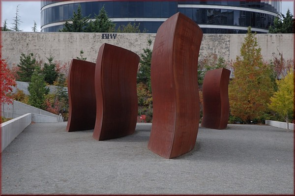
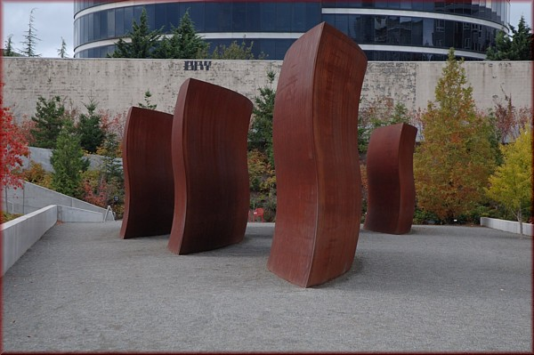
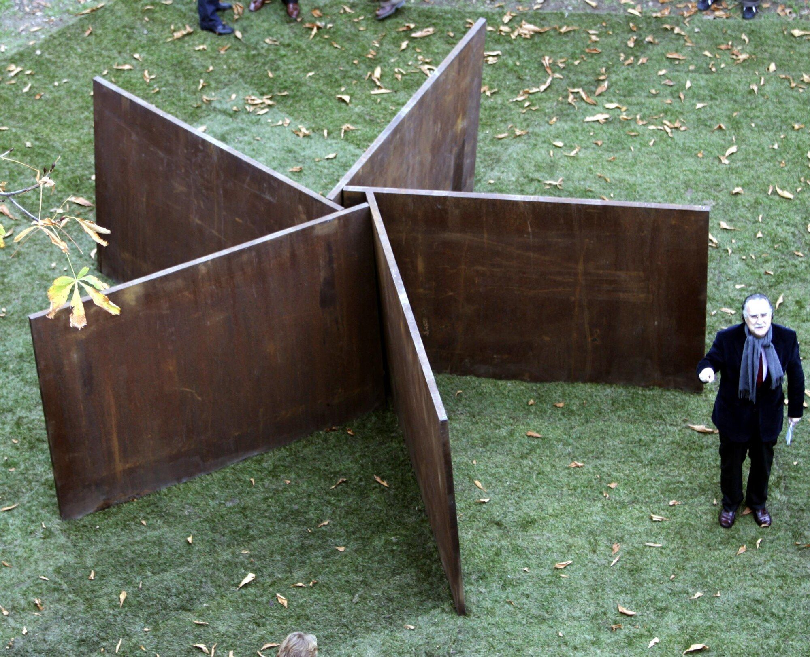
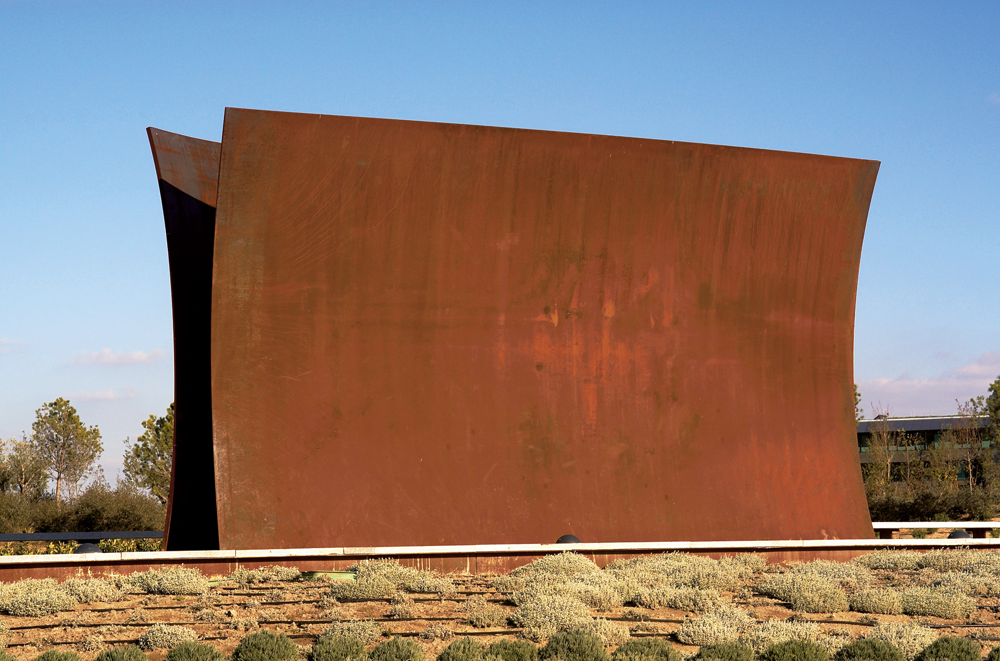
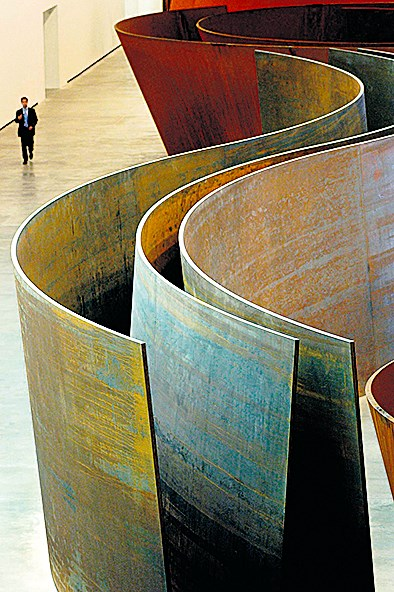
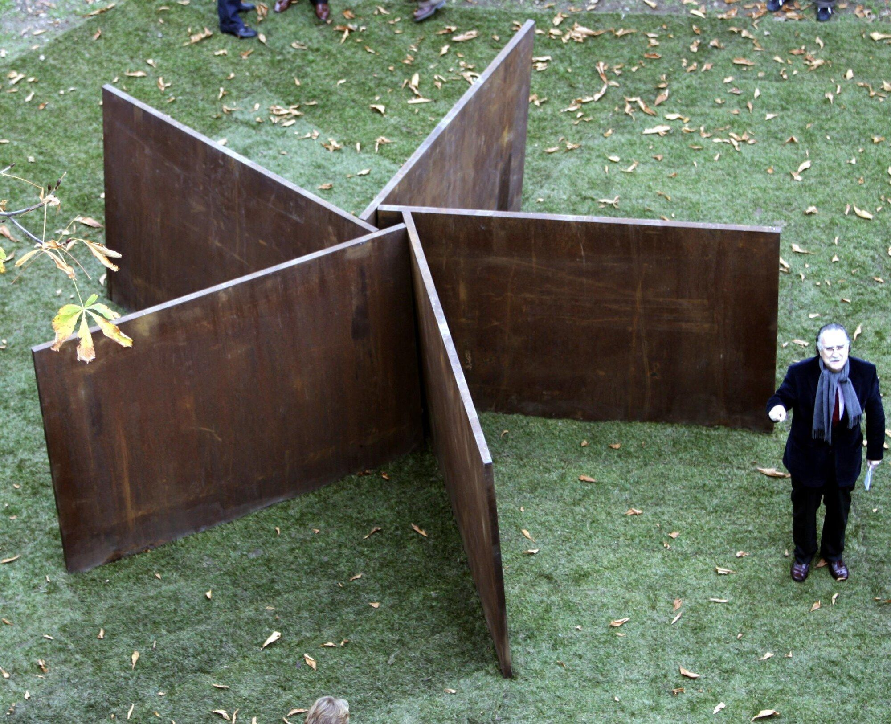
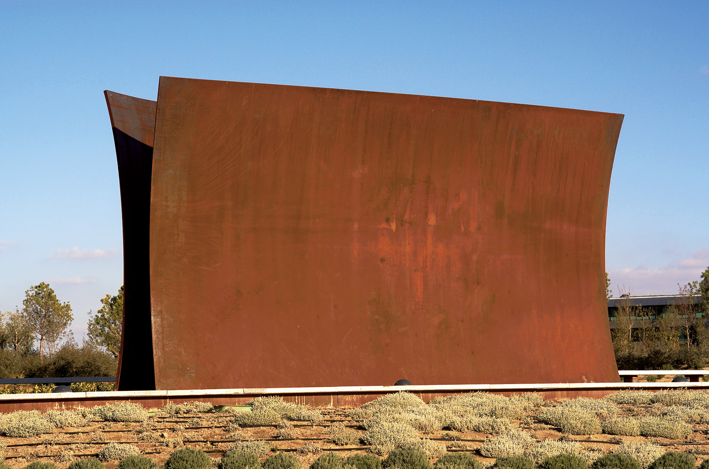
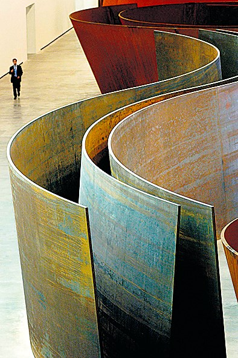

RICHARD SERRA
Muchos se preguntan cómo Richard Serra es capaz de transmitir calidez, belleza e intimidad con un material como el acero y unas dimensiones tan descomunales. Quizás sea el minimalismo de sus obras; quizás sea por «su audacia para vertebrar el espacio urbano», según el jurado del Premio Príncipe de Asturias; o quizás sea su peculiar forma de trabajar el acero corten; lo cierto es que el resultado final nos sobrecoge y nos impulsa a pasear entre sus creaciones, a tocarlas, a sentirlas.
Richard Serra, nacido en San Francisco en 1939, de padre español y madre rusa, se forjó entre los altos hornos de las fábricas de acero de Pitchburg, en donde entró para conseguir el dinero que le permitiera estudiar Literatura inglesa, y salió conociendo el manejo del acero y la forma de darle vida: «Mi madre tuvo una gran influencia en mí en el tema del arte. Fue una persona que inculcó en mí la idea de que podía llegar a ser artista».
Después de sus estudios de Literatura en la Universidad de California y de Arte en la de Yale, en las que conoció a artistas como Philip Guston, Jasper Johns, o Frank Stella, viajó a París y a Florencia, donde se vio envuelto en un mundo artístico y cultural que le llevó a cambiar sus inclinaciones artísticas: abandonó las letras y se entregó a la escultura, con la que ha llegado a ser «el más grande de los escultores vivos» según el arquitecto Norman Foster.
Sus primeros trabajos fueron totalmente abstractos, todavía lejos de sus grandes dimensiones posteriores, basados en el movimiento conocido como process art (arte en proceso) donde: «Lo importante de esos primeros tiempos era el proceso creativo, no el resultado final». En esta época, el artista se basó en cuatro principios para crear: to hurl, to split, to roll and to heap (arrojar, rajar, rodar y apilar), experimentando además con las propiedades plásticas de materiales como el cuero, el neón o el plomo. Surgen en estos años las series Prop (Apuntalar), con piezas apoyadas unas en otras, una explicación personal de los principios del equilibro; y Belts, cinturones suspendidos de un muro como figuras blandas y retorcidas, ambas expuestas en el Solomon R. Guggenheim Museum de Nueva York, en 1976.
Su primera exposición individual la había realizado, algunos años antes, en Roma, en la galería La Salita, demostrando su gran originalidad y también toda su rebeldía ante lo que se consideraba «exposición» ya que recreó el hábitat de varios animales vivos, encerrados en sus jaulas y lo llamó Live Animal Habitat y que, más tarde, prefirió no incluir en su catálogo de creaciones, por no estar dispuesto a reproducirlo de nuevo y por considerarlo fuera de su auténtica obra. Quizás por eso, la gran exposición auspiciada años después por el galerista Leo Castelli fue tan diferente. Serra realizó para su galería unas cien esculturas arrojando plomo derretido contra una pared y contra el suelo, para que el metal se estrellara antes de solidificarse y creara así las más puras formas.
Como los artistas no suelen conformarse con una sola faceta del arte, Richard Serra también probó suerte con el cine y realizó el corto Hands catching Lead (La mano cogiendo el plomo), continuando con el mundo del vídeo durante los años setenta. Sin embargo, no podía alejarse de sus esculturas y, tras ser galardonado con el Premio Theodoron en el Guggenheim de Nueva York, protagonizó una exposición individual para el Museo de Arte Pasadera, aunque sus inquietudes se dirigían más a los espacios urbanos. Es el momento en el que el artista se lanza a por la escala monumental. Su objetivo es relacionar al ciudadano con su espacio creando esculturas impactantes por su tamaño y también por su sencillez.
La simplicidad y la pureza de las formas son elementos esenciales en mi trabajo.

 

 




